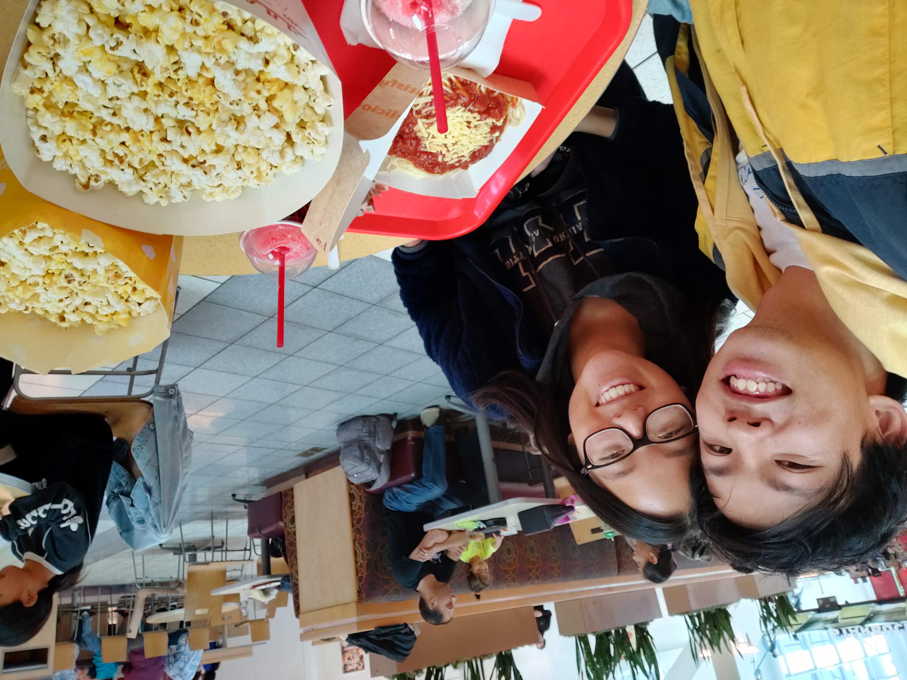

Amanda and Ethan both attended UC Davis starting 2017 and each ended up attending Asian American Christian Fellowship (AACF). In group study sessions, Amanda was hard at work. Because of this, she initially was not a fan of Ethan who just played video games and doodled instead (you can ask Amanda about this time). Through AACF and a class they accidentally took together, they ended up getting to know each other better and became good friends. They both started to realize they enjoyed each other's company near the end of freshman year and decided to start dating in sophomore year (on NOVEMBER 8!!! does that sound FAMILIAR TO YOU??).

In the rest of their undergrad years, they enjoyed living on the same street, watching cartoons, playing games, eating a lot (a LOT) of food, and hanging out with their beloved friends together. They also had a pandemic together.

When they graduated from UC Davis, Ethan moved back to Daly City to drive more buses and Amanda stayed in Davis to look at eyeballs (at an optometry). They visited each other at least once a month, and visited Daly City/Laguna Niguel to get to know each other’s families more, and grew into this new post-grad stage of life together.
In 2023, Ethan had received EXCELLENT news that Amanda would be relocating to Daly City to look at more eyeballs in San Francisco. Since then, Ethan had started and completed a Master’s program at UC Santa Cruz, they have been attending the same church at Branches SF, they continued to do all those same activities they did together in undergrad, and then they finally got ENGAGED!!!! wahoo!!! now YOU are invited to their wedding! YAY!